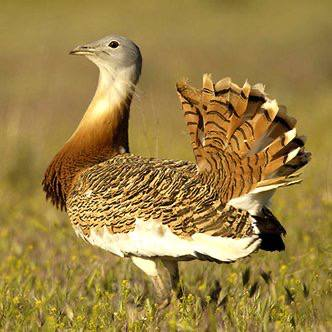
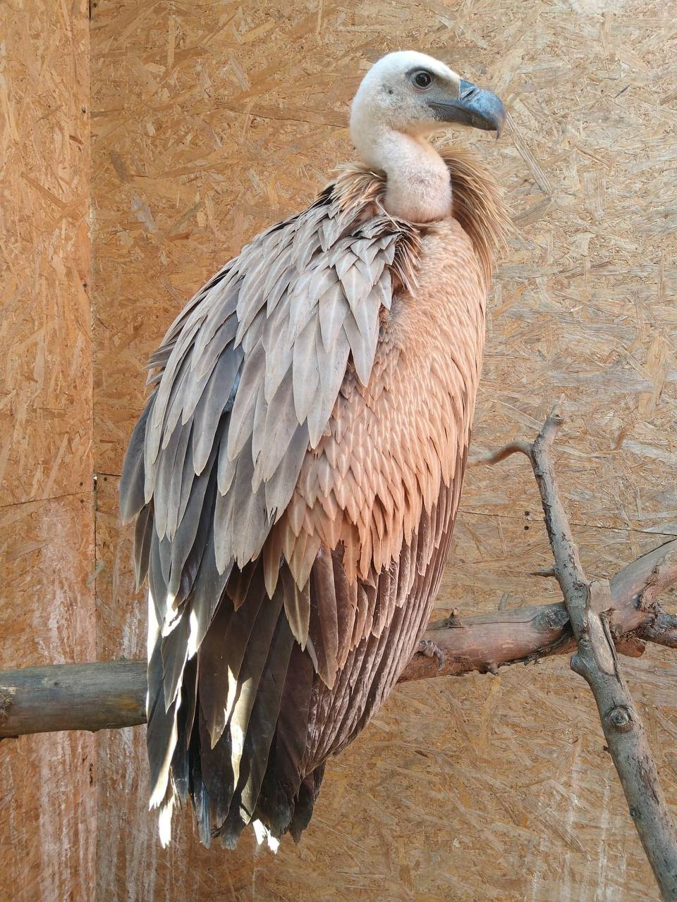
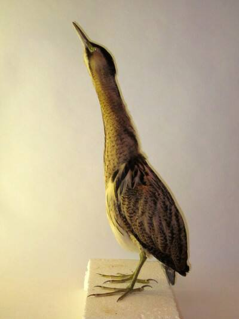

Păsări incluse în Cartea Roșie

Dropia este o specie extrem de rară în Moldova, cu doar câteva perechi rămase.

Vulturul pleșuv sur joacă un rol vital în ecosistem.

Buhaiul de baltă trăiește în zonele umede și este amenințat de poluare.